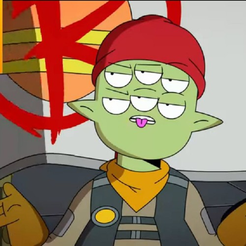

Tribore Menendez
Facción
La resistencia
Ocupación
Lider de la resistencia
Especie
Alienígena
Actor de voz
Olan Rogers
Relaciones
Amistades
Gary GoodSpeed
Quinn
Avocato
Paqueño Cato
Mooncake
H.U.E.
Familia
Quatronostro (hijo)
Enemigos
Otros
Habilidades
Liderago
Combate mano a mano
Biografía
According to his own story in "The Closer You Get", Tribore was hatched under the three full moons during the feast of the Seven Wonders. At his birth, there was a soothsayer by the name of Tim Belts who said he would actually sprout into a fire elemental with magnificent wings, but this didn't happen since Tim was actually just a hallucinating late-stage alcoholic. Tribore came up with his own name. How much of this story is actually true is debatable however.
Five years before the start of the series, Tribore was in the same bar where Gary Goodspeed first met Quinn Ergon. Gary accidentally knocked him out when storming into the bar.
Personalidad
At first glance, he doesn't appear to be particularly bright, or all that useful. He has a habit of constantly phrasing his thoughts in the form of a question, and then answer it himself. He also tends to repeat what Quinn would say, sometimes rhetorically. Based on his behaviour and seemingly constant confusion, he is seen as less intelligent than other Infinity Guards.
However, when push comes to shove, Tribore can be a surprisingly competent leader and combatant. "Chapter 9" revealed him to be leader of a a resistance against the Lord Commander-ruled Infinity Guard; a position he gained because he was "pure spirit" and "incorruptible." In The Descent Into Darkness, he easily defeated Todd in single combat. The Sixth Key proved him to be a capable shrink as well.